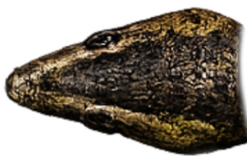

Steer
Use A/D or Left/Right. On mobile, drag the movement pad. Pause to reposition landscape controls.

Slither N' SlashA browser game by Postak Creations
Slither N' Slash is an arcade snake game where every meal makes you stronger and every centipede is looking for a bite. Hunt moving prey, close your body into traps, unleash your boost, and defend your tail.
How to play
Use A/D or Left/Right. On mobile, drag the movement pad. Pause to reposition landscape controls.
Eat grubs and orange balls to grow your score and progression. At 100 progression, large mice begin appearing and add six points. After their blue arrival shield fades, poison beetles remove 25% of your current progression.
Your visible snake caps at 50 body pieces, but score growth keeps scaling the arena, thickness, boost capacity, and unlocks. The arena zooms farther out around you, making bugs and animals appear smaller and move more slowly. Large mice and the Green Tree Snake predator unlock at 100 progression. Hold W, Up, Shift, or Space to boost.
Close any part of your body into a loop. Enclosed creatures progressively slow and turn orange; larger or longer creatures take more time relative to your snake. Keep the loop closed until they become food.
Inside the arena
Play in your browser
Choose your snake
Your selected snake skin and high score are saved only in this browser. No sign-in is needed.
About the game
Slither N' Slash is an independent arcade game built by Postak Creations. It combines the familiar satisfaction of growing a snake with smooth trail-following movement, rechargeable boost, moving prey, solid centipede combat, body-loop trapping, glowing rewards, and rare power-ups.
The current build keeps the player snake fast and readable by capping the visible body at 50 pieces, while score progression continues to expand the arena, increase thickness, extend boost capacity, and unlock bigger threats.
Close any section of your body into a loop to trap enclosed creatures. Keep the loop closed while their bodies slow down and turn orange; larger or longer prey takes more time, and opening early lets them recover and escape. Completed transformations create stationary orange food that both you and centipedes can eat.
The game is in active development. Planned additions include more arenas, creatures and power-ups, expanded accessibility settings, balance improvements, and an optional leaderboard.
Current release: v0.5.1
News & changelog
FAQ
Yes. The game is free to play in your browser and does not require an account.
Yes. Phones and tablets use an on-screen movement pad and boost control. Landscape play provides the largest arena view, and you can pause to slide both control boxes to a comfortable height.
Your high score is stored in this browser. A paused run remains available while the page stays open, but active runs and high scores do not sync between devices.
Make a closed loop with any part of your snake's body. Fully enclosed creatures progressively slow and turn orange without a separate trap ring. Larger or longer creatures take more time relative to your snake. Keep the loop intact until they become orange balls; if it opens early, they recover and escape.
Once your snake reaches 100 progression, the rare Golden Mouse can appear. It adds six points and activates ten seconds of Berserker mode, followed by two seconds of recovery that pushes food away. Fireballs burn poison beetles into safe orange rewards but do not harm centipedes.
A poison beetle removes 25% of your current progression unless Berserker mode protects you; it cannot reduce the snake below its starting length. New beetles have a visible blue two-second arrival shield, and trapping or burning one converts it into safe food.
No. Slither N' Slash currently has no user accounts and does not ask for personal information to play.
Legal
Last updated: July 3, 2026
This policy explains how Slither N' Slash and Postak Creations handle information when you visit or play.
The game stores your high score and game preferences in your browser's local storage. This information stays on your device and is not tied to an account. You can remove it by clearing this site's browser data.
We use Google Analytics to understand general site traffic and game usage. Google may process information such as pages visited, approximate location, device and browser information, referring pages, and IP address according to its own policies.
We use Google AdSense to support the site. Google and its advertising partners may use cookies, local storage, or similar technologies to deliver, measure, and personalize ads where permitted. Depending on your location and choices, ads may be personalized or non-personalized.
You can block or delete cookies through your browser, use any consent controls presented on this site, and manage how Google uses advertising data through Google's My Ad Center. Blocking storage may affect high-score saving or some site features.
This site is intended for a general audience and is not directed to children under 13. We do not knowingly collect personal information directly from children.
Postak Creations does not sell personal information. Analytics and advertising data may be processed by Google and its partners under their policies and retention settings. Learn more in Google's Privacy Policy.
Questions or privacy requests can be sent to support@postakcreations.com.
Legal
Last updated: July 3, 2026
By using Slither N' Slash, you agree to use the site lawfully and responsibly. If you do not agree, please do not use the site.
The game is provided free of charge and “as is.” We may change, pause, or discontinue features at any time. We do not guarantee uninterrupted operation, saved progress, or compatibility with every device.
Do not attempt to disrupt the site, bypass security, introduce malicious code, misuse future leaderboard features, scrape the service abusively, or use the site in violation of applicable law.
Slither N' Slash, its code, artwork, sounds, branding, and original content are owned by Postak Creations or used with permission. You may play the game for personal, non-commercial use. No other rights are granted.
The site uses third-party services, including Google Analytics and Google AdSense. Those services are governed by their own terms and policies.
To the fullest extent permitted by law, Postak Creations is not liable for indirect, incidental, special, or consequential losses resulting from your use of the site. Nothing in these terms excludes rights that cannot legally be excluded.
Questions about these terms can be sent to support@postakcreations.com.
Contact
Send support requests, feedback, and business inquiries to Postak Creations.
support@postakcreations.com